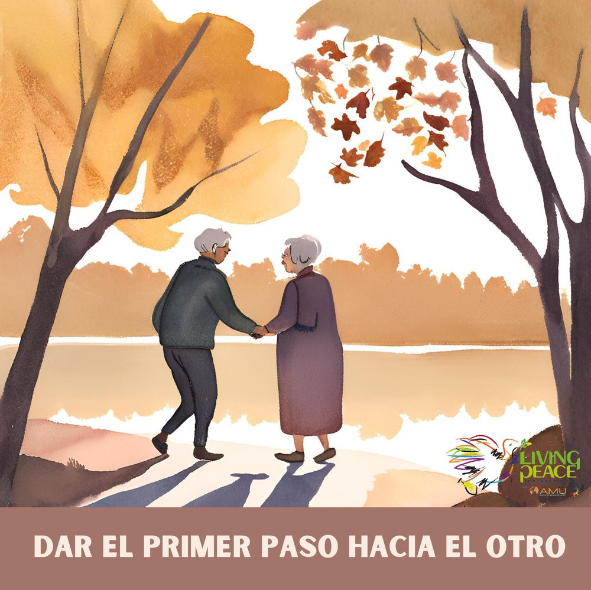
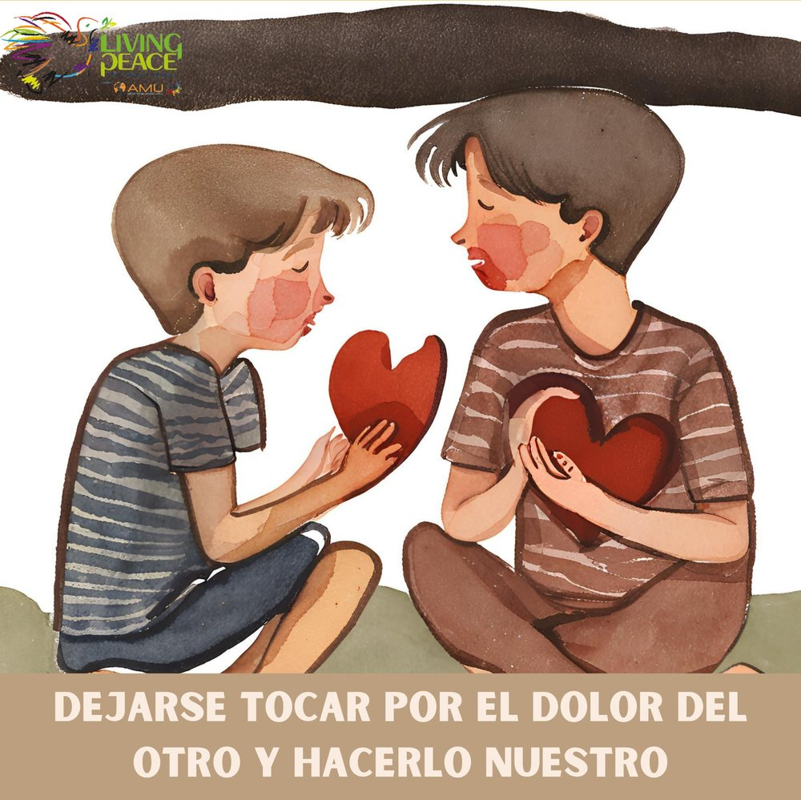
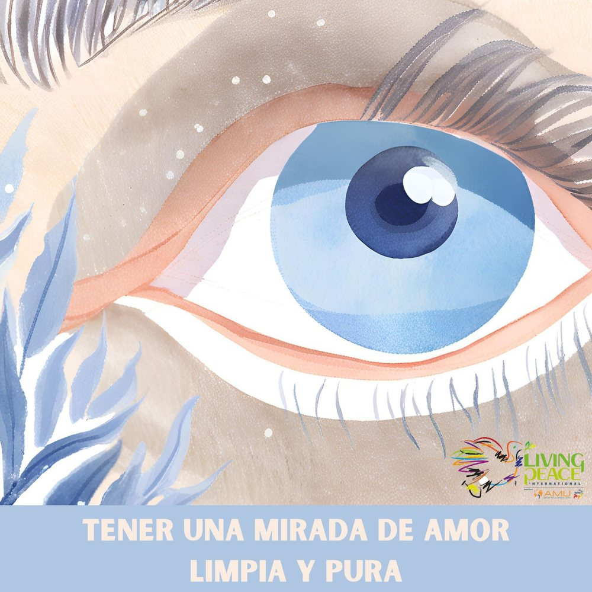
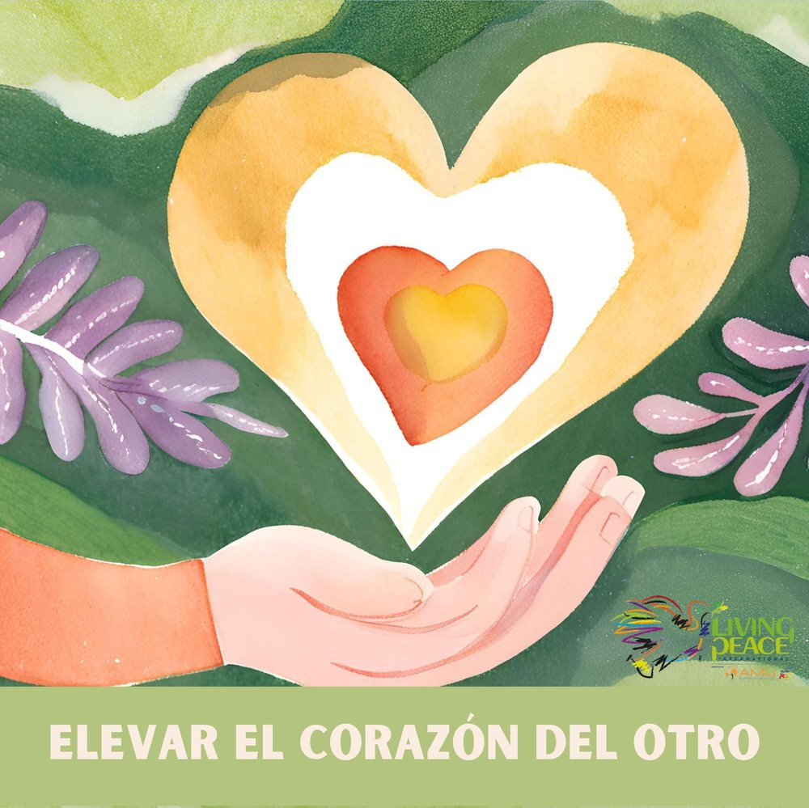
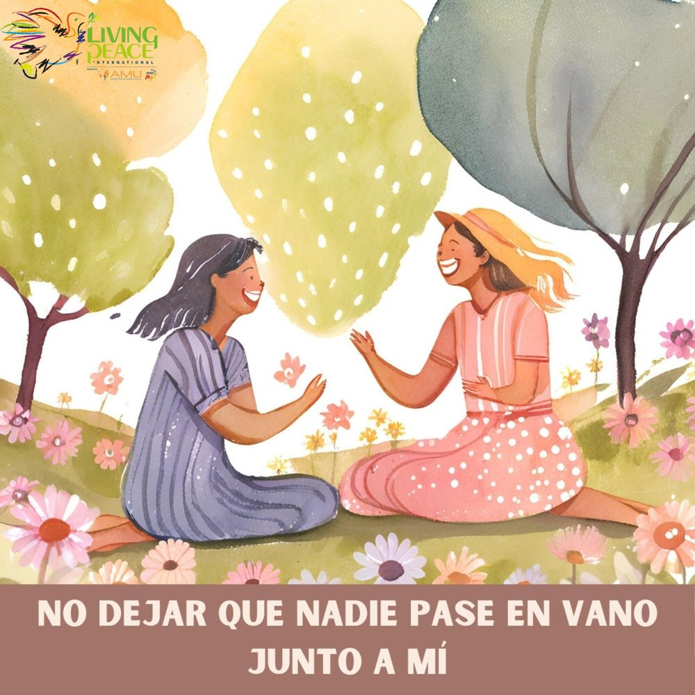
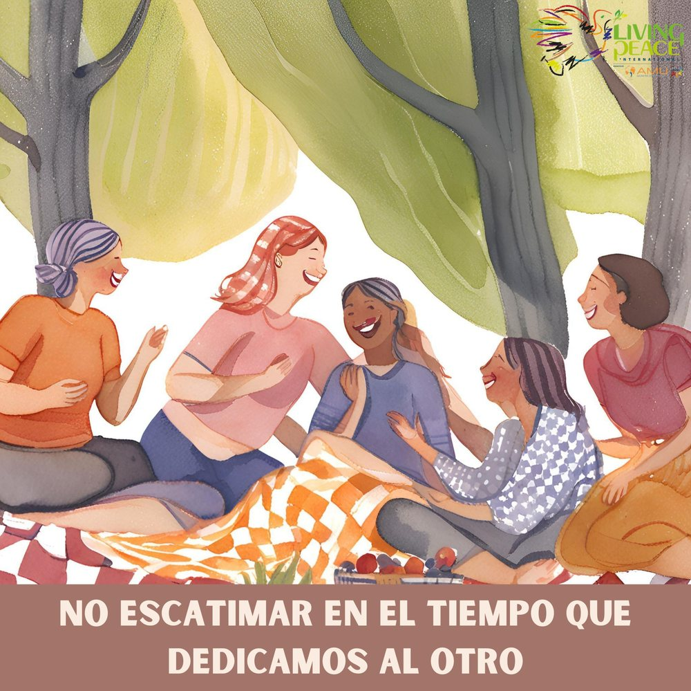

TU GESTO DE PROXIMIDAD PARA LA PAZ
Dar el primer paso hacia el otro
Acércate tú primero: saluda, pregunta o acompaña a alguien que necesita presencia.
ACERCARSE TAMBIÉN ES CONSTRUIR PAZ
Lanza el dado y descubre una manera sencilla de vivir la paz acercándote al otro con mirada limpia, tiempo y corazón disponible.






Acércate tú primero: saluda, pregunta o acompaña a alguien que necesita presencia.
LAS SEIS CARAS
Pulsa una tarjeta para descubrir cómo acercarte mejor.
“La proximidad empieza cuando dejo de pasar de largo.”
Mirar · Acoger · Acompañar